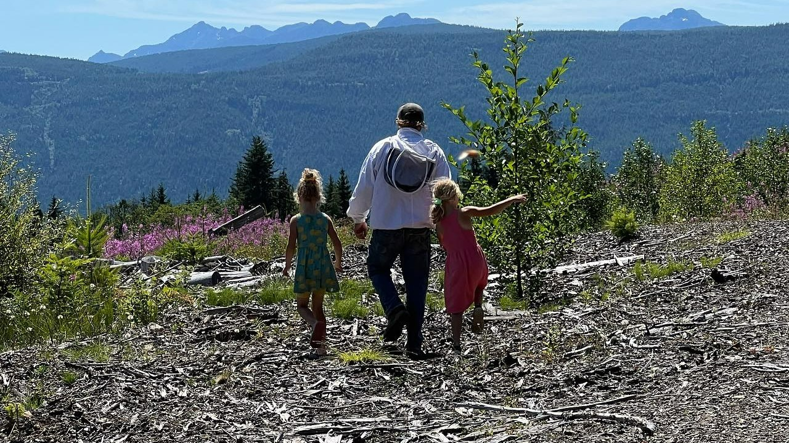
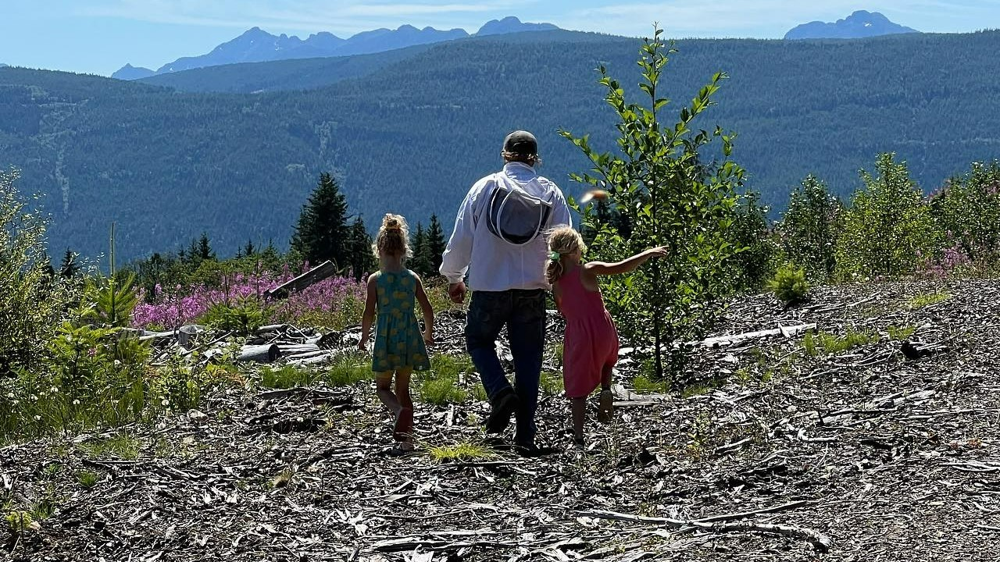

We are a small family farm on beautiful Vancouver Island providing pasture raised meat to our local community
A family owned and operated farm just outside of Nanaimo, BC, nestled in the heart of nature's beauty. Our farm offers a blend of differing products, featuring pasture raised pigs, wild flower honey, speckled park cattle, and a bounty of fresh, local produce. Experience the essence of sustainable farming at its finest, right here on our picturesque Nanaimo farm
 
